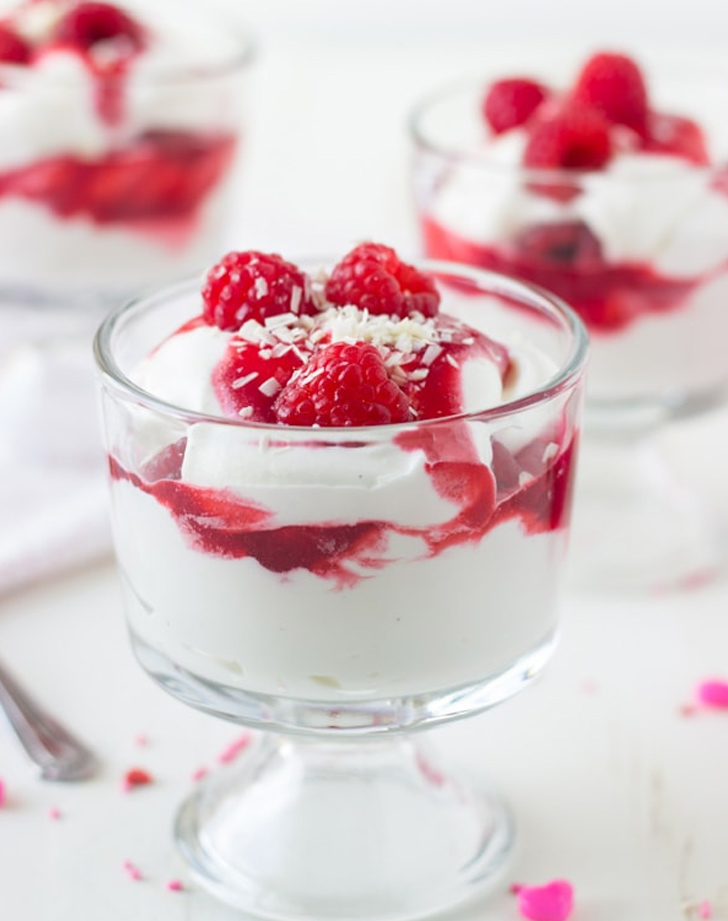

White Chocolate Raspberry Mousse

Description
"let’s get the party started for these white chocolate raspberry
mousse cups. It’s a week away from Valentine’s Day and we need
more desserts in our life."
"For this white chocolate raspberry parfait, I whipped up a vanilla
bean mousse with some melted white chocolate folded in. It’s so
rich and delicious. Add a ripple of fresh raspberry sauce and some
raspberries and you have yourself a beautiful mini dessert."
Ingredients
- 1 ½ cups raspberries,
- 3 tablespoons granulated sugar,
- 1 ½ teaspoon fresh lemon juice,
Steps
- To make the sauce: In a small saucepan, combine
the raspberries, sugar and lemon juice. Bring
to a simmer over medium-high heat, mashing
the berries with a spoon.
- Remove from heat and press through a fine-mesh
sieve using the back of a spoon. Collect sauce
in a bowl. Refrigerate until cold.
- Divide half of the mousse among 6 small glasses
or ramekins. Top with each with a tablespoon of
cooled raspberry sauce and a few raspberries.
- Top with remaining mousse, sauce, and raspberries.
Sprinkle with shaved white chocolate. Refrigerate
until cold, at least 30 minutes before serving.